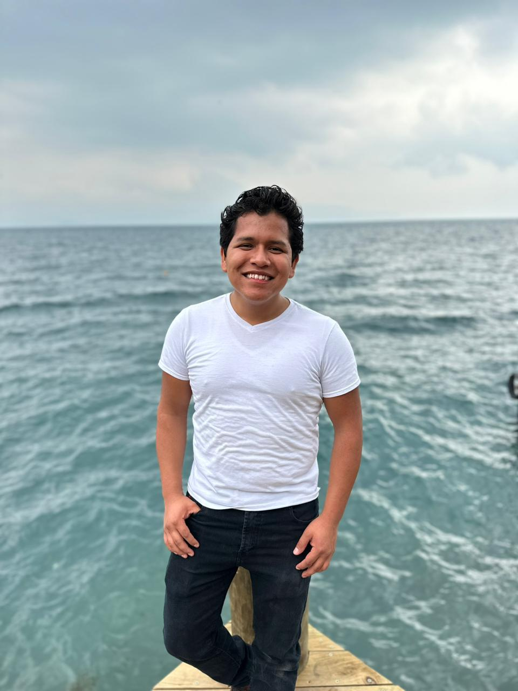

Walter Gonzalez | WDD 130
I'm Walter Gonzalez from Guatemala, Quetzaltenango. I'm new in the programming wold, however I feel excited about this new path. I do enjoy listening to music and hang out with family and friends. Reading books is something I'm currently implementing in my life and is something is changing me a lot in different ways.
Everything about the web fundamentals course its new for me and even though is difficult for me to understand and learn at the same time I'm doing my best to apply what I'm learning through out the course and I feel I'm getting used to each time I practice.